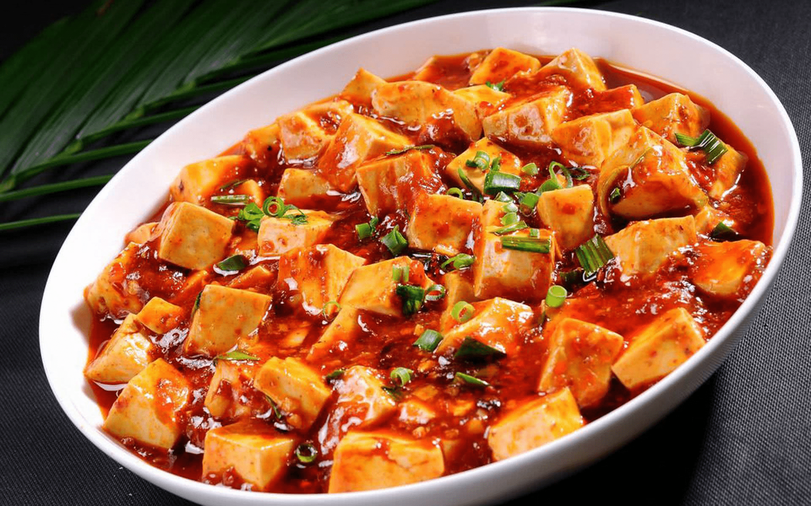
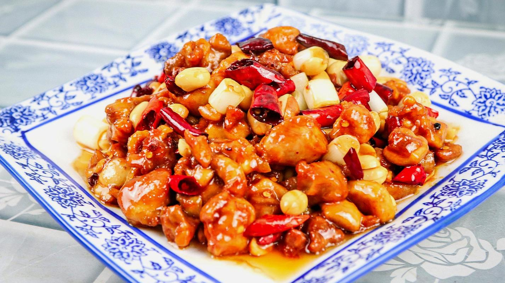
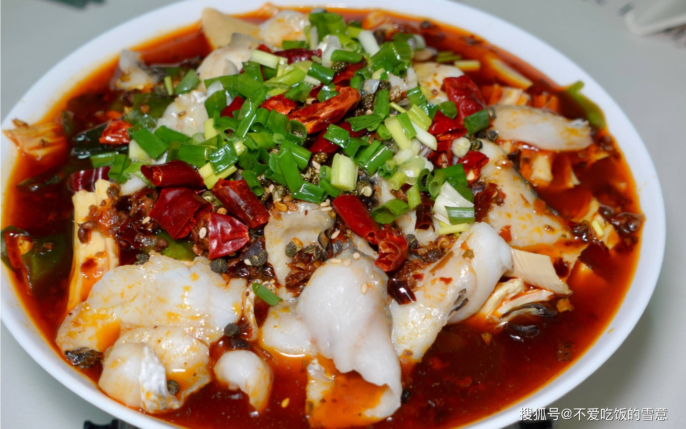
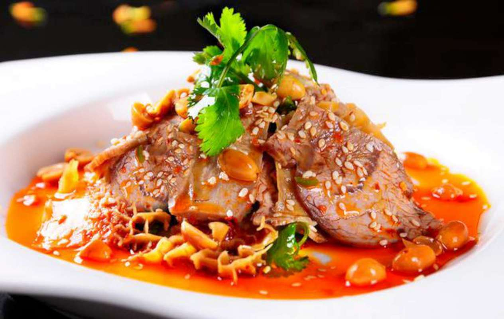
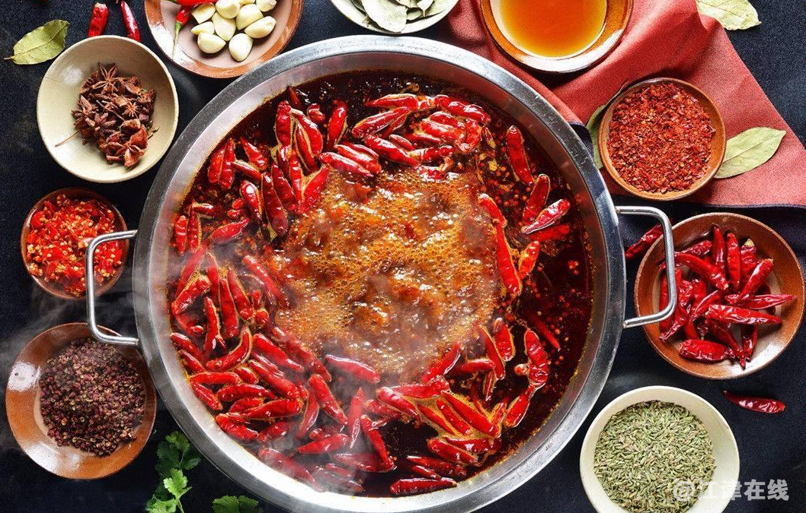
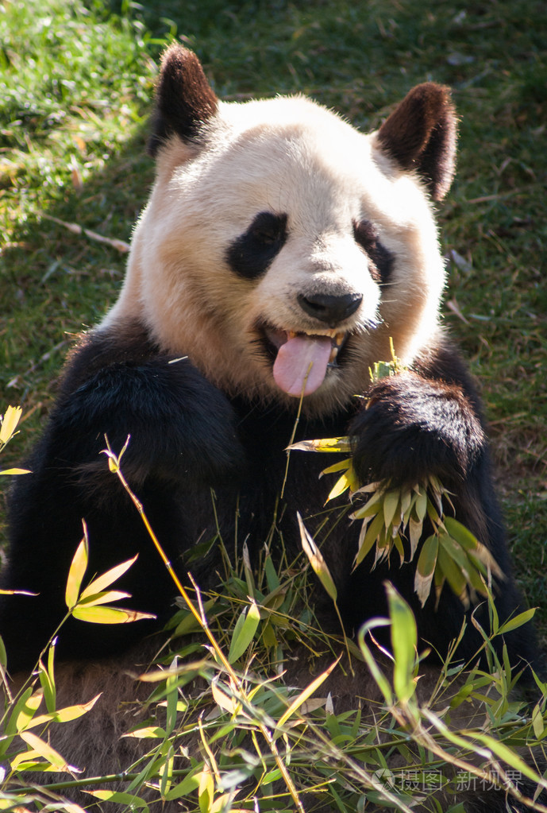

川菜
什么是川菜？
川菜，又称四川菜，是中国八大菜系之一，以其麻辣鲜香著称。川菜在烹饪中善于使用辣椒、花椒、豆瓣酱等调味品，形成了独特的口味。
川菜的特点
-
麻辣鲜香
川菜以其麻辣鲜香的独特口味闻名，使用花椒、辣椒等调料。
-
多样化的烹饪方式
川菜包含炒、煎、蒸、炖等多种烹饪方式，每种方式都有其独特的风味。
-
独特的调味品
川菜调味品丰富，如豆瓣酱、花椒油、辣椒油等，使得菜品味道层次丰富。
特色菜品

麻婆豆腐
经典的川菜菜品，以豆腐、牛肉末、豆瓣酱为主料。下饭神器。

宫保鸡丁
川菜中的名菜，口味酸甜辣，深受喜爱。但是总觉得吃不饱。

水煮鱼
以鱼片为主料，搭配多种调味品和辣椒，口感鲜嫩。注意鱼刺，真的多。

夫妻肺片
以牛头皮、牛心、牛舌、牛肚、牛肉为主料，进行卤制，而后切片。再配以辣椒油、花椒面等辅料制成红油浇在上面。我是吃不来肺片。。。
不是川菜

火锅
火锅儿好次！

竹子
熊猫看了都说好